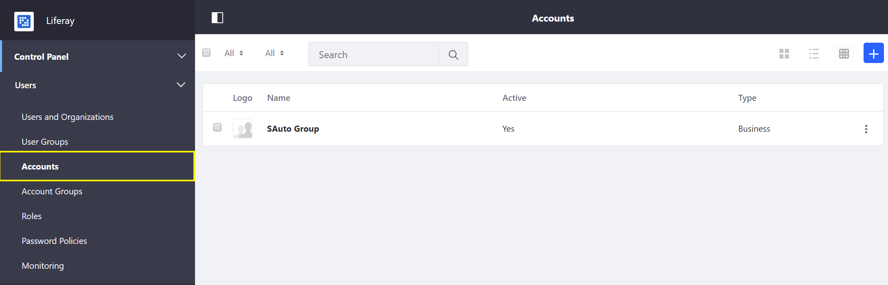
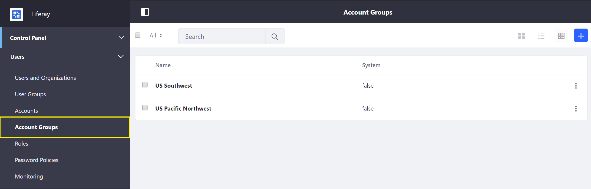
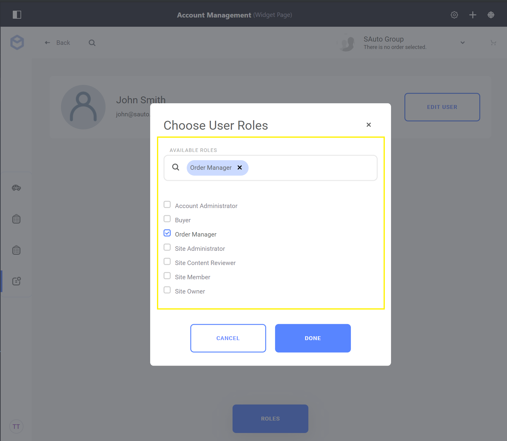

Introduction to Accounts¶
In Liferay Commerce, accounts store information about customers and are used to manage and empower business representatives to provide great customer service experiences. Accounts store information including but not limited to: billing address, shipping address, payment information, order information, VAT number (as applicable). There are two types of accounts: Business and Personal. How these accounts function in a store will vary depending on the configured Site Type.
Account Types¶
Business Accounts: For the B2B site type, an individual customer must be assigned to a Business account in order to make a purchase. Multiple users may be associated with a single business account and these users can be assigned unique Account Roles.
Personal Accounts: For the B2C site type, individual authenticated customers will automatically be associated with a Personal account and be able to make purchases.
Note: Liferay User Account Profile information is only imported at the time of Personal Account creation, further updates to a Liferay User Account Profile are not propagated to the Personal Account.
Managing and Empowering Accounts¶
There are two ways to manage accounts: 1) using the Account Management widget and 2) through the Control Panel. Access to the Control Panel is typically restricted to those with administrative permissions for the store or installation.

Accounts and their associated users may be managed through the Account Management widget.

Accounts and their associated users may also be managed through the Accounts widget in the Control Panel.
Accounts may also be grouped together as needed to facilitate account management or marketing needs. See Creating a New Account Group for more information.

Finally, individual users associated with a given Business Account may be given Account Roles to delegate and self-service their accounts for their business. For more information see Account Roles

Common Account Management Actions¶
See the following articles to learn more about common Account Management actions: